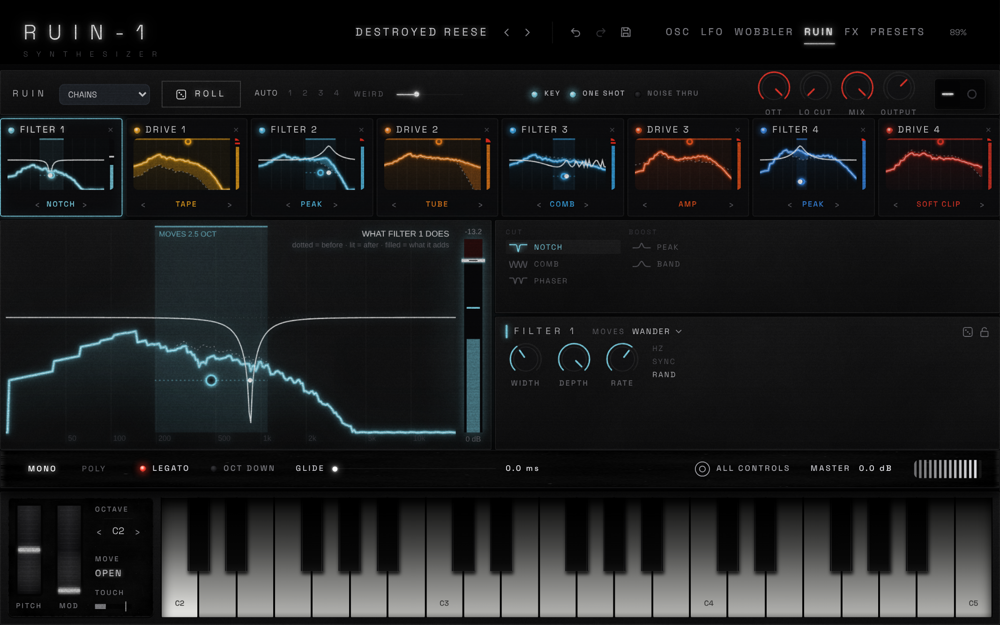

<!doctype html>
<html><head><meta charset="utf-8"><title>RUIN-1 site</title>
<style>
@font-face { font-family: SG; src: url('../../src/ui/fonts/space-grotesk.woff2') format('woff2'); }
* { box-sizing: border-box; }
body { margin: 0; width: 1440px; background: var(--bg); color: var(--ink); font-family: SG, Inter, sans-serif; overflow-x: hidden; }
section { position: relative; overflow: hidden; }
.tex { position: absolute; inset: 0; z-index: 0; }
.tex svg { width: 100%; height: 100%; display: block; }
.layer { position: absolute; inset: 0; pointer-events: none; }
.z { position: relative; z-index: 5; }
.wrap { width: 1240px; margin: 0 auto; position: relative; z-index: 5; }
.kick { font-size: 13px; letter-spacing: .32em; color: var(--acc); text-transform: uppercase; }
h1, h2 { font-weight: 400; margin: 0; color: var(--head); text-transform: uppercase; }
h1 { font-size: 92px; letter-spacing: .32em; text-shadow: 0 0 40px var(--glow2); }
h2 { font-size: 46px; letter-spacing: .24em; line-height: 1.25; }
p { color: var(--body); font-size: 17px; line-height: 1.7; letter-spacing: .02em; }
.btn { display: inline-flex; align-items: center; gap: 12px; padding: 16px 28px; font-size: 13px; letter-spacing: .26em; text-transform: uppercase; border: 1.5px solid var(--acc); color: var(--head); border-radius: 4px;
  box-shadow: 0 0 22px var(--glow), inset 0 0 14px var(--glow); background: rgba(0,0,0,.35); }
.btn.ghost { border-color: rgba(255,255,255,.55); box-shadow: none; }
.grain { position: fixed; } /* (not used) */
nav { position: absolute; top: 0; left: 0; right: 0; z-index: 20; display: flex; align-items: center; gap: 42px; padding: 30px 100px; font-size: 13px; letter-spacing: .22em; color: var(--body); text-transform: uppercase; }
nav .lg { margin-right: auto; display: flex; align-items: center; gap: 16px; }
nav .on { color: var(--head); position: relative; } nav .on::after { content: ''; position: absolute; left: 0; right: 0; bottom: -10px; height: 2px; background: var(--acc); box-shadow: 0 0 10px var(--acc); }
.word { line-height: 1; } .word b { display: block; font-weight: 400; font-size: 26px; letter-spacing: .42em; color: var(--head); } .word i { display: block; font-style: normal; font-size: 9px; letter-spacing: .62em; color: var(--body); margin-top: 6px; }
.rule { height: 1px; background: linear-gradient(90deg, transparent, var(--line), transparent); position: absolute; left: 0; right: 0; z-index: 6; }
/* features */
.feat { display: grid; grid-template-columns: repeat(3, 1fr); margin-top: 70px; }
.feat > div { display: flex; gap: 22px; padding: 36px 30px 36px 0; border-bottom: 1px solid var(--line); }
.feat > div:nth-child(3n+2), .feat > div:nth-child(3n+3) { padding-left: 36px; border-left: 1px solid var(--line); }
.feat .ic { flex: 0 0 58px; height: 58px; border-radius: 50%; border: 1.5px solid currentColor; display: grid; place-items: center; box-shadow: 0 0 16px currentColor, inset 0 0 10px currentColor; background: rgba(0,0,0,.45); }
.feat .ic svg { width: 30px; height: 30px; fill: none; stroke: currentColor; stroke-width: 1.8; stroke-linecap: round; stroke-linejoin: round; }
.feat h4 { margin: 4px 0 8px; font-weight: 400; font-size: 14px; letter-spacing: .26em; color: var(--head); text-transform: uppercase; }
.feat p { margin: 0; font-size: 14.5px; line-height: 1.6; }
/* video */
.video { position: relative; border-radius: 10px; overflow: hidden; border: 1px solid var(--line); box-shadow: 0 30px 80px #000, 0 0 50px var(--glow); }
.video img { display: block; width: 100%; }
.video .play { position: absolute; left: 50%; top: 44%; width: 96px; height: 96px; margin: -48px; border-radius: 50%; border: 2px solid var(--acc); background: rgba(0,0,0,.45); box-shadow: 0 0 30px var(--acc), inset 0 0 20px var(--glow); display: grid; place-items: center; }
.video .play::after { content: ''; border-left: 30px solid #fff; border-top: 18px solid transparent; border-bottom: 18px solid transparent; margin-left: 8px; }
.video .bar { position: absolute; left: 0; right: 0; bottom: 0; height: 58px; background: linear-gradient(transparent, rgba(0,0,0,.9)); display: flex; align-items: center; gap: 22px; padding: 0 24px; font-size: 12px; color: #ddd; }
.video .bar .tr { flex: 1; height: 3px; background: rgba(255,255,255,.25); position: relative; } .video .bar .tr::before { content: ''; position: absolute; left: 0; top: 0; bottom: 0; width: 22%; background: var(--acc); box-shadow: 0 0 8px var(--acc); }
.os { display: flex; gap: 22px; } .os .badge { width: 62px; height: 62px; border-radius: 12px; border: 1.5px solid var(--acc); display: grid; place-items: center; box-shadow: 0 0 16px var(--glow); background: rgba(0,0,0,.4); }
.os .badge svg { width: 32px; height: 32px; fill: var(--acc); }
.os h5 { margin: 6px 0 14px; font-weight: 400; font-size: 21px; color: var(--head); } .os ul { margin: 0; padding: 0; list-style: none; font-size: 14px; line-height: 1.95; color: var(--body); }
.foot { display: flex; align-items: center; gap: 40px; font-size: 12px; letter-spacing: .22em; color: var(--body); text-transform: uppercase; }
.soc { display: flex; gap: 18px; } .soc span { width: 22px; height: 22px; border-radius: 4px; background: var(--body); opacity: .55; }
</style></head><body>
<script>
// ---------------------------------------------------------------- shared helpers
const V = new URLSearchParams(location.search).get('v') || 'a';
let seedN = 1;
const rnd = (() => { let s = { a: 11, b: 29, c: 47 }[V]; return () => ((s = (s * 16807) % 2147483647) / 2147483647); })();
/** a relief texture: fractal noise lit like stone / rust / concrete */
function relief({ freq = 0.012, oct = 5, light = '#a08070', az = 235, el = 38, scale = 6, tint = 'rgba(0,0,0,.55)', type = 'fractalNoise', extra = '' } = {}) {
  const id = 'f' + seedN++;
  return `<div class="tex"><svg preserveAspectRatio="none"><filter id="${id}" x="0" y="0" width="100%" height="100%"><feTurbulence type="${type}" baseFrequency="${freq}" numOctaves="${oct}" seed="${seedN * 7}"/>
    <feDiffuseLighting lighting-color="${light}" surfaceScale="${scale}"><feDistantLight azimuth="${az}" elevation="${el}"/></feDiffuseLighting>${extra}</filter>
    <rect width="100%" height="100%" filter="url(#${id})"/><rect width="100%" height="100%" fill="${tint}"/></svg></div>`;
}
/** film grain over a section */
function grain(op = .22) {
  const id = 'g' + seedN++;
  return `<div class="layer" style="z-index:30;opacity:${op};mix-blend-mode:overlay"><svg width="100%" height="100%"><filter id="${id}"><feTurbulence type="fractalNoise" baseFrequency=".85" numOctaves="2" seed="${seedN}"/><feColorMatrix type="saturate" values="0"/></filter><rect width="100%" height="100%" filter="url(#${id})"/></svg></div>`;
}
/** glowing particles (embers, dust in the light) */
function embers(n, w, h, col, maxR = 2.4, x0 = 0, y0 = 0) {
  let s = '';
  for (let i = 0; i < n; i++) {
    const r = .6 + rnd() * maxR, o = .25 + rnd() * .75;
    s += `<div style="position:absolute;left:${x0 + rnd() * w}px;top:${y0 + rnd() * h}px;width:${r * 2}px;height:${r * 2}px;border-radius:50%;background:${col};opacity:${o};box-shadow:0 0 ${r * 5}px ${col}"></div>`;
  }
  return `<div class="layer" style="z-index:8">${s}</div>`;
}
/** a ruined skyline: towers with broken tops and a few lit windows */
function ruins(w, h, base, { col = '#0c0908', win = '#ff8a2a', n = 26, maxH = .8, haze = 'rgba(255,120,40,.08)', seed = 1 } = {}) {
  let d = '', wins = '';
  let x = -20;
  while (x < w) {
    const bw = 40 + rnd() * 120, bh = (.15 + rnd() * maxH) * h, top = base - bh;
    // jagged broken top
    let pts = `${x},${base} ${x},${top + rnd() * 30}`;
    const steps = 3 + Math.floor(rnd() * 5);
    for (let k = 1; k <= steps; k++) pts += ` ${x + (bw * k) / steps},${top + rnd() * 60 - (rnd() < .2 ? 40 : 0)}`;
    pts += ` ${x + bw},${base}`;
    d += `<polygon points="${pts}"/>`;
    // windows
    for (let wy = top + 50; wy < base - 30; wy += 26 + rnd() * 10) for (let wx = x + 10; wx < x + bw - 14; wx += 18 + rnd() * 8)
      if (rnd() < .05) wins += `<rect x="${wx}" y="${wy}" width="6" height="10" fill="${win}" opacity="${.4 + rnd() * .6}" filter="url(#wg${seed})"/>`;
    x += bw * (.6 + rnd() * .5);
  }
  return `<svg class="layer" style="z-index:3" width="${w}" height="${h}" viewBox="0 0 ${w} ${h}"><defs><filter id="wg${seed}"><feGaussianBlur stdDeviation="1.6"/></filter>
    <filter id="rt${seed}"><feTurbulence type="fractalNoise" baseFrequency=".04" numOctaves="4" seed="${seed * 13}"/><feDiffuseLighting lighting-color="#4a2c1e" surfaceScale="5"><feDistantLight azimuth="200" elevation="30"/></feDiffuseLighting><feComposite in2="SourceGraphic" operator="in"/></filter></defs>
    <rect width="${w}" height="${h}" fill="${haze}"/><g fill="${col}">${d}</g><g filter="url(#rt${seed})" opacity=".4" fill="#fff">${d}</g>${wins}</svg>`;
}
const LOGO = {
  a: (s = 46, c = 'var(--acc)') => `<svg width="${s}" height="${s}" viewBox="0 0 48 48"><path d="M24 4 L45 42 H3 Z" fill="none" stroke="${c}" stroke-width="2.6" stroke-linejoin="round" style="filter:drop-shadow(0 0 6px ${c})"/><path d="M12 33 C16 22 20 22 22 30 S28 38 30 26 L33 20 L36 30" fill="none" stroke="${c}" stroke-width="2.2" stroke-linecap="round" style="filter:drop-shadow(0 0 5px ${c})"/></svg>`,
  b: (s = 46, c = 'var(--acc)') => `<svg width="${s}" height="${s}" viewBox="0 0 48 48"><circle cx="24" cy="24" r="19" fill="none" stroke="${c}" stroke-width="2.4" style="filter:drop-shadow(0 0 7px ${c})"/><circle cx="24" cy="24" r="9" fill="${c}" opacity=".85" style="filter:drop-shadow(0 0 10px ${c})"/><path d="M5 24 H14 M34 24 H43" stroke="${c}" stroke-width="2"/></svg>`,
  c: (s = 46, c = 'var(--acc)') => `<svg width="${s}" height="${s}" viewBox="0 0 48 48"><path d="M14 5 H5 V43 H14 M34 5 H43 V43 H34" fill="none" stroke="#bfe8ff" stroke-width="2.4" style="filter:drop-shadow(0 0 6px #3fb8ff)"/><path d="M11 30 L17 18 L23 32 L29 14 L37 30" fill="none" stroke="${c}" stroke-width="2.4" stroke-linejoin="round" style="filter:drop-shadow(0 0 6px ${c})"/></svg>`,
}[V];
const ICON = {
  osc: '<path d="M2 16 L7 6 L12 26 L17 6 L22 26 L27 6 L30 16"/>', sub: '<circle cx="16" cy="16" r="12"/><path d="M8 16 C11 9 13 9 16 16 S21 23 24 16"/>',
  noise: '<path d="M3 16 L5 10 L7 20 L9 7 L11 24 L13 12 L15 19 L17 5 L19 27 L21 11 L23 21 L25 9 L27 18 L29 16"/>', chain: '<rect x="2" y="11" width="7" height="10" rx="1.5"/><rect x="12.5" y="11" width="7" height="10" rx="1.5"/><rect x="23" y="11" width="7" height="10" rx="1.5"/><path d="M9 16 H12.5 M19.5 16 H23"/>',
  filter: '<path d="M2 10 H14 C20 10 20 26 30 26"/>', tape: '<circle cx="9" cy="16" r="6"/><circle cx="23" cy="16" r="6"/><path d="M9 22 H23"/>',
  matrix: '<circle cx="8" cy="8" r="3"/><circle cx="24" cy="8" r="3"/><circle cx="8" cy="24" r="3"/><circle cx="24" cy="24" r="3"/><path d="M11 8 H21 M8 11 V21 M11 11 L21 21"/>', fx: '<path d="M3 16 C6 6 9 26 12 16 S18 6 21 16 S27 26 29 16"/>',
  wheel: '<rect x="11" y="3" width="10" height="26" rx="3"/><path d="M11 18 H21"/>', bank: '<path d="M4 9 H13 L15 12 H28 V26 H4 Z"/>', oct: '<path d="M16 4 V26 M9 19 L16 26 L23 19"/>', mpe: '<rect x="3" y="9" width="26" height="15" rx="2"/><path d="M10 9 V18 M16 9 V18 M22 9 V18"/>',
};
const FEATS = [
  ['osc', 'Dual oscillators', 'Saw, pulse, wavetable, PWM-saw and a plucked string. Unison up to seven, sync and spread.', '#ff4a3a'],
  ['sub', 'Sub oscillator', 'Six shapes on a clean, mono path of its own, so the low end stays solid.', '#ffb020'],
  ['noise', 'Fourteen textures', 'Crackle, dust, tape hiss, air, rumble and their hits. Playable across the keys.', '#ffb020'],
  ['chain', 'The RUIN chain', 'Eight boxes in any order: moving filters, ten drive types and EQs, built for neuro.', '#ff5a1f'],
  ['filter', 'Filters', 'A saturating ladder, SEM, 303 diode, formant, comb, gate and more.', '#3fd6c0'],
  ['tape', 'Tape', 'Wow, flutter and drift, from a studio reel to a broken Walkman.', '#ffb020'],
  ['matrix', 'Mod matrix', 'Nine rows, six LFOs with humanize, drift and bloom: nothing ever repeats.', '#ff8a2a'],
  ['fx', 'Effects', 'BBD chorus, flanger, phaser, a dark vintage reverb and a four-band EQ.', '#a07aff'],
  ['wheel', 'Mod wheel moves', 'One connected move per sound: harder, darker, wider, as an instrument would.', '#3f98ff'],
  ['bank', 'Preset bank', 'Hand-built sounds across basses, leads, pads, keys and noise.', '#ffb020'],
  ['oct', 'Oct down', 'The whole synth at half speed, live: an octave lower, everything slower.', '#ff8a2a'],
  ['mpe', 'MPE & host sync', 'Per-note bend, pressure and slide. LFOs and RUIN follow your DAW.', '#ffb020'],
];
const THEME = {
  a: { bg: '#090605', acc: '#ff8a2a', head: '#fff2e4', body: '#b9a493', line: 'rgba(255,150,80,.16)', glow: 'rgba(255,120,40,.35)', glow2: 'rgba(255,140,60,.35)' },
  b: { bg: '#0a0302', acc: '#ff3b2a', head: '#ffe8e2', body: '#c09a92', line: 'rgba(255,70,50,.18)', glow: 'rgba(255,40,20,.35)', glow2: 'rgba(255,40,20,.45)' },
  c: { bg: '#07090b', acc: '#ff5a1f', head: '#eef6fb', body: '#93a3ae', line: 'rgba(140,200,255,.14)', glow: 'rgba(255,90,31,.32)', glow2: 'rgba(63,184,255,.35)' },
}[V];
for (const [k, v] of Object.entries(THEME)) document.documentElement.style.setProperty('--' + k, v);
if (V === 'b') FEATS.forEach((f) => (f[3] = ['#ff3b2a', '#ff6a4a', '#ff9a7a'][Math.floor(rnd() * 3)]));
if (V === 'c') FEATS.forEach((f, i) => (f[3] = ['#8ae9ff', '#3fb8ff', '#ff5a1f', '#ffb020', '#e6dcc8'][i % 5]));

const navHtml = `<nav><span class="lg">${LOGO()}<span class="word"><b>RUIN-1</b><i>SYNTHESIZER</i></span></span><span class="on">Overview</span><span>Sound</span><span>Features</span><span>Requirements</span><span class="btn" style="padding:12px 22px">Buy now</span></nav>`;
const OSI = { mac: '<path d="M22 17c0-3 2.4-4.4 2.5-4.5-1.4-2-3.5-2.3-4.3-2.3-1.8-.2-3.6 1.1-4.5 1.1-.9 0-2.4-1.1-3.9-1-2 0-3.9 1.2-4.9 3-2.1 3.7-.5 9.1 1.5 12.1 1 1.5 2.2 3.1 3.7 3 1.5-.1 2-.9 3.8-.9 1.8 0 2.3.9 3.8.9 1.6 0 2.6-1.5 3.6-3 1.1-1.7 1.6-3.4 1.6-3.5 0 0-3-1.2-3-4.9zM19.2 8.2c.8-1 1.4-2.4 1.2-3.8-1.2.1-2.6.8-3.4 1.8-.8.9-1.4 2.3-1.2 3.7 1.3.1 2.6-.7 3.4-1.7z"/>', win: '<path d="M4 7 L14 5.5 V15 H4 Z M16 5.2 L28 3.5 V15 H16 Z M4 17 H14 V26.5 L4 25 Z M16 17 H28 V28.5 L16 26.8 Z"/>' };

// ---------------------------------------------------------------- per-variant hero and backdrops
function hero() {
  if (V === 'a') return `<section style="height:980px">
    ${relief({ freq: .007, oct: 6, light: '#8a6450', az: 300, el: 26, scale: 12, tint: 'rgba(8,4,2,.42)' })}
    <div class="layer" style="z-index:1;background:radial-gradient(ellipse 34% 60% at 46% 30%, rgba(255,150,60,.28), transparent 70%), radial-gradient(ellipse 60% 30% at 50% 100%, rgba(255,120,40,.16), transparent 70%), linear-gradient(90deg, rgba(5,3,2,.85) 0%, transparent 45%)"></div>
    <!-- hanging lamp and its light cone -->
    <div class="layer" style="z-index:2"><div style="position:absolute;left:666px;top:-20px;width:2px;height:120px;background:#120c08"></div><div style="position:absolute;left:640px;top:96px;width:54px;height:40px;border-radius:0 0 30px 30px;background:radial-gradient(circle at 50% 70%, #fff2c0, #ffae40 40%, #5a2a08 75%);box-shadow:0 0 60px 20px rgba(255,170,70,.65), 0 0 180px 60px rgba(255,120,40,.3)"></div>
      <div style="position:absolute;left:470px;top:120px;width:400px;height:860px;clip-path:polygon(43% 0,57% 0,100% 100%,0 100%);background:linear-gradient(rgba(255,190,110,.32),rgba(255,140,60,.05) 85%);filter:blur(10px)"></div></div>
    <!-- wet floor -->
    <div class="layer" style="z-index:2;top:760px;background:linear-gradient(rgba(0,0,0,0),rgba(10,6,4,.9));"></div>
    <div class="layer" style="z-index:3;top:780px">${Array.from({ length: 26 }, () => `<div style="position:absolute;left:${380 + rnd() * 700}px;top:${rnd() * 120}px;width:${2 + rnd() * 5}px;height:${60 + rnd() * 140}px;background:linear-gradient(rgba(255,170,90,.55),transparent);filter:blur(2px)"></div>`).join('')}</div>
    ${embers(140, 900, 900, '#ffb060', 2.2, 400, 40)}
    <!-- the glowing mark on the rock -->
    <div class="layer" style="z-index:4;left:560px;top:300px;opacity:.75">${LOGO(170, '#ff9a3a')}</div>
    <!-- the device in its rusted case -->
    <div style="position:absolute;z-index:6;left:760px;top:170px;width:620px;transform:perspective(1600px) rotateY(-20deg) rotateX(3deg)">
      <div style="position:relative;padding:20px;border-radius:10px;overflow:hidden;box-shadow:0 40px 90px #000, 0 0 70px rgba(255,120,40,.35)">
        ${relief({ freq: .035, oct: 5, light: '#b0603a', az: 120, el: 40, scale: 3, tint: 'rgba(40,14,4,.35)' })}
        ${['10px 10px', '10px calc(100% - 22px)', 'calc(100% - 22px) 10px', 'calc(100% - 22px) calc(100% - 22px)'].map((p) => `<div style="position:absolute;left:${p.split(' ')[0]};top:${p.split(' ')[1]};width:12px;height:12px;border-radius:50%;background:radial-gradient(circle at 35% 35%,#9a8a7a,#2a1a10);z-index:2"></div>`).join('')}
        
      </div>
      
    </div>
    ${navHtml}
    <div class="z" style="position:absolute;left:100px;top:250px;width:560px"><div class="kick">A dark, cinematic<br>synthesizer</div><h1 style="margin:30px 0 26px">RUIN-1</h1>
      <p style="font-size:19px;margin:0 0 44px">Saturated, tape-worn and alive. Two oscillators, a sub, fourteen textures and an eight-box distortion chain for the sounds that live in the dark.</p>
      <span class="btn">Buy now ›</span> <span class="btn ghost" style="margin-left:18px">Listen ▷</span></div>
    ${grain(.28)}</section>`;
  if (V === 'b') return `<section style="height:980px">
    ${relief({ freq: .02, oct: 5, light: '#9a3a2a', az: 270, el: 38, scale: 4, tint: 'rgba(12,2,1,.42)' })}
    <div class="layer" style="z-index:1;background:radial-gradient(ellipse 45% 55% at 72% 10%, rgba(255,40,20,.45), transparent 70%), linear-gradient(90deg, rgba(8,1,0,.9) 0%, transparent 50%)"></div>
    <!-- safelight -->
    <div class="layer" style="z-index:2"><div style="position:absolute;left:1000px;top:40px;width:120px;height:70px;border-radius:8px;background:#1a0706;border:2px solid #2a0d0a"></div><div style="position:absolute;left:1014px;top:52px;width:92px;height:46px;border-radius:4px;background:radial-gradient(#ff6a50,#c01208 70%);box-shadow:0 0 80px 30px rgba(255,40,20,.55), 0 0 260px 100px rgba(255,30,10,.22)"></div></div>
    <!-- the line with prints -->
    <div class="layer" style="z-index:4"><div style="position:absolute;left:600px;right:-20px;top:250px;height:2px;background:#2a0f0c;transform:rotate(-2deg)"></div>
      ${[[640, 262, 300, -3, 'ruin.png'], [1180, 246, 300, 2, 'osc.png']].map(([x, y, w, r, src]) => `<div style="position:absolute;left:${x}px;top:${y}px;width:${w}px;transform:rotate(${r}deg);padding:12px 12px 34px;background:#d8cfc4;box-shadow:0 20px 50px #000;filter:sepia(.3) hue-rotate(-15deg) brightness(.7)"><div style="position:absolute;left:45%;top:-16px;width:14px;height:34px;background:#3a2a20;border-radius:3px"></div></div>`).join('')}</div>
    <!-- the big print being developed -->
    <div style="position:absolute;z-index:6;left:690px;top:430px;width:660px;transform:rotate(1.2deg)">
      <div style="padding:18px 18px 46px;background:#e4dbcf;box-shadow:0 40px 90px #000, 0 0 60px rgba(255,40,20,.35);filter:sepia(.25) saturate(1.4) hue-rotate(-12deg) brightness(.92)"><div style="font-size:12px;letter-spacing:.3em;color:#5a2a20;margin-top:14px">RUIN-1 · PRINT 01</div></div>
    </div>
    <!-- tray of developer at the bottom -->
    <div class="layer" style="z-index:5;top:870px;left:560px;width:880px;height:140px;border-radius:14px 14px 0 0;background:linear-gradient(#2a0806,#120201);box-shadow:inset 0 10px 30px rgba(255,40,20,.35)"></div>
    ${embers(60, 900, 700, '#ff5a40', 1.4, 540, 120)}
    ${navHtml}
    <div class="z" style="position:absolute;left:100px;top:260px;width:540px"><div class="kick">Developed in the dark</div><h1 style="margin:30px 0 26px">RUIN-1</h1>
      <p style="font-size:19px;margin:0 0 44px">A synthesizer that sounds like a photograph left in the chemicals too long: saturated, worn, a little ruined, and always moving.</p>
      <span class="btn">Buy now ›</span> <span class="btn ghost" style="margin-left:18px">Listen ▷</span></div>
    ${filmStrip('left')}${grain(.32)}</section>`;
  return `<section style="height:980px">
    ${relief({ freq: .006, oct: 6, light: '#74828c', az: 200, el: 40, scale: 5, tint: 'rgba(4,6,8,.42)' })}
    ${cracks(1440, 980)}
    <div class="layer" style="z-index:1;background:radial-gradient(ellipse 50% 50% at 70% 50%, rgba(63,184,255,.16), transparent 70%), radial-gradient(ellipse 30% 40% at 85% 90%, rgba(255,90,31,.25), transparent 70%), linear-gradient(90deg, rgba(3,5,7,.88) 0%, transparent 50%)"></div>
    <!-- fluorescent tube -->
    <div class="layer" style="z-index:2"><div style="position:absolute;left:760px;top:70px;width:560px;height:10px;border-radius:5px;background:#eaf8ff;box-shadow:0 0 30px 8px rgba(160,220,255,.7), 0 0 160px 40px rgba(63,184,255,.25)"></div><div style="position:absolute;left:740px;top:80px;width:600px;height:500px;background:linear-gradient(rgba(170,220,255,.14),transparent);clip-path:polygon(4% 0,96% 0,100% 100%,0 100%);filter:blur(12px)"></div></div>
    <!-- device in a steel rack -->
    <div style="position:absolute;z-index:6;left:740px;top:200px;width:620px">
      <div style="position:relative;padding:26px 30px;border-radius:6px;overflow:hidden;box-shadow:0 40px 100px #000, 0 0 60px rgba(63,184,255,.22)">
        ${relief({ freq: .2, oct: 2, light: '#8a96a0', az: 90, el: 60, scale: 1.2, tint: 'rgba(10,14,18,.45)', type: 'turbulence' })}
        ${[[8, 8], [8, 'b'], ['r', 8], ['r', 'b']].map(([x, y]) => `<div style="position:absolute;${x === 'r' ? 'right:8px' : 'left:8px'};${y === 'b' ? 'bottom:8px' : 'top:8px'};width:12px;height:12px;border-radius:50%;background:radial-gradient(circle at 35% 35%,#c8d4dc,#2a3238);z-index:2"></div>`).join('')}
        
      </div>
      <div style="height:60px;margin:0 20px;background:linear-gradient(rgba(63,184,255,.18),transparent);filter:blur(14px)"></div>
    </div>
    <div class="layer" style="z-index:7;background:repeating-linear-gradient(0deg, transparent 0 3px, rgba(0,0,0,.18) 3px 4px)"></div>
    ${embers(70, 700, 500, '#ff7a3a', 1.6, 740, 420)}
    ${embers(60, 700, 300, '#bfe8ff', 1.1, 740, 120)}
    ${navHtml}
    <div class="z" style="position:absolute;left:100px;top:260px;width:560px"><div class="kick">Filters like ice · Drives like fire</div><h1 style="margin:30px 0 26px">RUIN-1</h1>
      <p style="font-size:19px;margin:0 0 44px">A cold, heavy synthesizer with an eight-box distortion chain at its core. Built in concrete, run hot.</p>
      <span class="btn">Buy now ›</span> <span class="btn ghost" style="margin-left:18px">Listen ▷</span></div>
    ${grain(.24)}</section>`;
}
function filmStrip(side) {
  let holes = '';
  for (let y = 10; y < 980; y += 34) holes += `<div style="position:absolute;${side}:12px;top:${y}px;width:16px;height:20px;border-radius:3px;background:#1c0806;box-shadow:inset 0 0 4px #000"></div>`;
  return `<div class="layer" style="z-index:9;${side}:0;width:40px;background:linear-gradient(90deg,#050101,#120402)">${holes}</div>`;
}
function cracks(w, h) {
  let p = '';
  for (let i = 0; i < 14; i++) {
    let x = rnd() * w, y = rnd() * h, d = `M${x} ${y}`;
    for (let k = 0; k < 10; k++) { x += (rnd() - .5) * 90; y += rnd() * 50; d += ` L${x} ${y}`; }
    p += `<path d="${d}"/>`;
  }
  return `<svg class="layer" style="z-index:1" width="${w}" height="${h}"><g fill="none" stroke="#000" stroke-width="1.6" opacity=".55">${p}</g><g fill="none" stroke="#8aa0b0" stroke-width=".6" opacity=".18" transform="translate(1,1)">${p}</g></svg>`;
}
// ---------------------------------------------------------------- shared sections, themed
function bgFor(i) {
  if (V === 'a') return relief({ freq: .009 + i * .002, oct: 5, light: '#7a5640', az: 250 + i * 20, el: 28, scale: 10, tint: 'rgba(8,5,3,.55)' });
  if (V === 'b') return relief({ freq: .02, oct: 4, light: '#8a2a20', az: 260, el: 35, scale: 4, tint: 'rgba(10,2,1,.48)' }) + filmStrip(i % 2 ? 'right' : 'left');
  return relief({ freq: .008, oct: 5, light: '#66747e', az: 200, el: 40, scale: 5, tint: 'rgba(5,7,9,.5)' }) + cracks(1440, 700);
}
function demo() {
  return `<section style="height:700px">${bgFor(1)}
    <div class="layer" style="z-index:1;background:radial-gradient(ellipse 40% 60% at 70% 50%, var(--glow), transparent 70%)"></div>
    <div class="wrap" style="display:flex;gap:80px;align-items:center;height:700px">
      <div style="width:440px"><div class="kick">Audio demo</div><h2 style="margin:22px 0 24px">Hear RUIN-1<br>in action</h2>
        <p>Four minutes of the synth on its own: Reese basses ground through the RUIN chain, tape-worn pads, crackle and air, and the mod wheel pushed hard.</p>
        <div style="height:1px;background:var(--line);margin:34px 0"></div><span class="btn">▶ Watch full demo ›</span></div>
      <div style="flex:1"><div class="video"><div class="play"></div>
        <div class="bar"><span>▶</span><span>0:00 / 4:12</span><div class="tr"></div><span>🔊</span><span>CC</span><span>⛶</span></div></div></div>
    </div>${grain(.22)}</section>`;
}
function reqs() {
  return `<section style="height:460px">${bgFor(2)}
    <div class="wrap" style="display:flex;gap:70px;align-items:center;height:460px">
      <div style="width:380px"><div class="kick">System requirements</div><h2 style="margin:22px 0 22px">Get set up</h2>
        <p>Light on the machine: about 3% CPU per voice, no GPU, no account, and it never goes online.</p></div>
      <div style="width:1px;align-self:stretch;margin:90px 0;background:var(--line)"></div>
      <div class="os" style="flex:1"><div class="badge"><svg viewBox="0 0 32 32">${OSI.win}</svg></div><div><h5>Windows</h5><ul><li>Windows 10 or later, 64-bit</li><li>Any x64 CPU with SSE2</li><li>4 GB RAM</li><li>Under 25 MB on disk</li><li>VST3 · standalone</li></ul></div></div>
      <div style="width:1px;align-self:stretch;margin:90px 0;background:var(--line)"></div>
      <div class="os" style="flex:1"><div class="badge"><svg viewBox="0 0 32 32">${OSI.mac}</svg></div><div><h5>macOS</h5><ul><li>macOS 11 or later</li><li>Apple Silicon or Intel</li><li>4 GB RAM</li><li>Under 25 MB on disk</li><li>AU · VST3 — coming</li></ul></div></div>
    </div>${grain(.22)}</section>`;
}
function feats() {
  const skyline = V === 'a' ? ruins(1440, 520, 520, { n: 30, maxH: .75, haze: 'rgba(0,0,0,0)', seed: 3 }) : '';
  return `<section style="height:1260px">${bgFor(3)}
    ${V === 'a' ? `<div class="layer" style="z-index:2;top:0;height:520px;left:600px;opacity:1">${skyline}</div><div class="layer" style="z-index:3;left:1180px;top:80px;opacity:.9">${LOGO(110, '#ff9a3a')}</div><div class="layer" style="z-index:3;background:linear-gradient(90deg,rgba(9,6,5,.9) 30%,transparent 70%),linear-gradient(transparent 40%,rgba(9,6,5,.95) 60%)"></div>` : ''}
    ${V === 'b' ? `<div class="layer" style="z-index:2;background:radial-gradient(ellipse 30% 20% at 85% 8%, rgba(255,40,20,.35), transparent 70%)"></div>` : ''}
    ${V === 'c' ? `<div class="layer" style="z-index:2;background:radial-gradient(ellipse 30% 25% at 88% 12%, rgba(63,184,255,.22), transparent 70%), radial-gradient(ellipse 25% 20% at 10% 95%, rgba(255,90,31,.18), transparent 70%)"></div>` : ''}
    <div class="wrap" style="padding-top:120px"><div class="kick">Technical features</div><h2 style="margin:22px 0 24px">Built for the dark</h2>
      <p style="width:560px">Everything on one page, nothing hidden: a deep engine that moves on its own, with the controls a producer reaches for.</p>
      <div class="feat">${FEATS.map(([ic, t, d, c]) => `<div><div class="ic" style="color:${c}"><svg viewBox="0 0 32 32">${ICON[ic]}</svg></div><div><h4>${t}</h4><p>${d}</p></div></div>`).join('')}</div>
    </div>${embers(40, 1440, 1200, V === 'c' ? '#bfe8ff' : 'var(--acc)', 1.2)}${grain(.22)}</section>`;
}
function cta() {
  let scene = '';
  if (V === 'a') scene = `${relief({ freq: .004, oct: 4, light: '#3a2014', az: 270, el: 60, scale: 4, tint: 'rgba(10,4,2,.4)' })}
    <div class="layer" style="z-index:1;background:radial-gradient(ellipse 70% 50% at 50% 100%, rgba(255,110,30,.55), transparent 70%), linear-gradient(#0b0705, rgba(40,14,4,.4))"></div>
    <div class="layer" style="z-index:2;opacity:.6">${ruins(1440, 820, 760, { maxH: .55, haze: 'rgba(255,110,40,.05)', seed: 7, col: '#2a1810' })}</div>
    <div class="layer" style="z-index:3">${ruins(1440, 820, 820, { maxH: .7, haze: 'rgba(0,0,0,0)', seed: 9 })}</div>
    <div class="layer" style="z-index:4;left:1010px;top:250px">${LOGO(130, '#ff9a3a')}</div>
    ${embers(160, 1440, 820, '#ffa050', 2)}`;
  if (V === 'b') scene = `${relief({ freq: .02, oct: 4, light: '#6a1a12', az: 270, el: 45, scale: 2, tint: 'rgba(12,2,1,.5)' })}
    <div class="layer" style="z-index:1;background:radial-gradient(ellipse 50% 60% at 50% 45%, rgba(255,40,20,.4), transparent 70%)"></div>
    <div class="layer" style="z-index:2;left:170px;top:120px;width:1100px;height:600px;transform:rotate(-1.5deg);padding:24px 24px 60px;background:#d6cbbd;box-shadow:0 40px 100px #000;filter:sepia(.4) hue-rotate(-18deg) saturate(1.8) brightness(.55)"></div>
    <div class="layer" style="z-index:3;background:radial-gradient(ellipse 45% 40% at 50% 48%, rgba(10,2,1,.75), transparent 80%)"></div>
    ${filmStrip('left')}${filmStrip('right')}${embers(70, 1440, 820, '#ff5a40', 1.3)}`;
  if (V === 'c') scene = `${relief({ freq: .006, oct: 6, light: '#4a5862', az: 200, el: 50, scale: 4, tint: 'rgba(4,6,8,.55)' })}${cracks(1440, 820)}
    <div class="layer" style="z-index:1;background:linear-gradient(90deg, rgba(63,184,255,.2), transparent 40%, transparent 60%, rgba(255,90,31,.3)), radial-gradient(ellipse 40% 50% at 50% 55%, rgba(0,0,0,.6), transparent 80%)"></div>
    <!-- a doorway at the end of the bunker -->
    <div class="layer" style="z-index:2;left:620px;top:200px;width:200px;height:620px;background:linear-gradient(#ffd0a0,#ff6a20 60%, #301004);box-shadow:0 0 120px 40px rgba(255,100,30,.45);opacity:.35;filter:blur(2px)"></div>
    <div class="layer" style="z-index:3;background:repeating-linear-gradient(0deg, transparent 0 3px, rgba(0,0,0,.2) 3px 4px)"></div>
    ${embers(80, 600, 700, '#ffa060', 1.6, 420, 120)}${embers(80, 1440, 400, '#bfe8ff', 1, 0, 0)}`;
  return `<section style="height:820px">${scene}
    <div class="z" style="text-align:center;padding-top:${V === 'b' ? 270 : 230}px"><div class="kick">${{ a: 'Your sound. Its ruin.', b: 'Expose. Develop. Ruin.', c: 'Cold steel. Hot signal.' }[V]}</div>
      <h1 style="margin:30px 0 22px;font-size:110px">RUIN-1</h1><p style="font-size:19px;margin:0 0 44px">A dark, cinematic synthesizer.</p>
      <span class="btn">Buy now ›</span> <span class="btn ghost" style="margin-left:18px">Listen ▷</span></div>${grain(.26)}</section>`;
}
function foot() {
  return `<section style="height:220px;background:#040303">${V === 'b' ? relief({ freq: .03, oct: 3, light: '#3a0d0a', scale: 1.5, tint: 'rgba(4,1,0,.7)' }) : ''}
    <div class="rule" style="top:0"></div>
    <div class="wrap foot" style="height:150px"><span class="lg" style="display:flex;align-items:center;gap:16px;margin-right:auto">${LOGO(42)}<span class="word"><b>RUIN-1</b><i>SYNTHESIZER</i></span></span>
      <span>Overview</span><span>/</span><span>Sound</span><span>/</span><span>Features</span><span>/</span><span>Requirements</span><span class="btn" style="margin-left:40px;padding:12px 22px">Buy now ›</span></div>
    <div class="wrap foot" style="font-size:11px;letter-spacing:.12em;text-transform:none"><span style="margin-right:auto">© 2026 RUIN-1. All rights reserved.</span><span class="soc"><span></span><span></span><span></span><span></span></span></div>
  </section>`;
}
const rule = () => `<div style="position:relative;height:0"><div class="rule"></div></div>`;
document.body.innerHTML = hero() + rule() + demo() + rule() + reqs() + rule() + feats() + rule() + cta() + foot();
</script>
</body></html>
